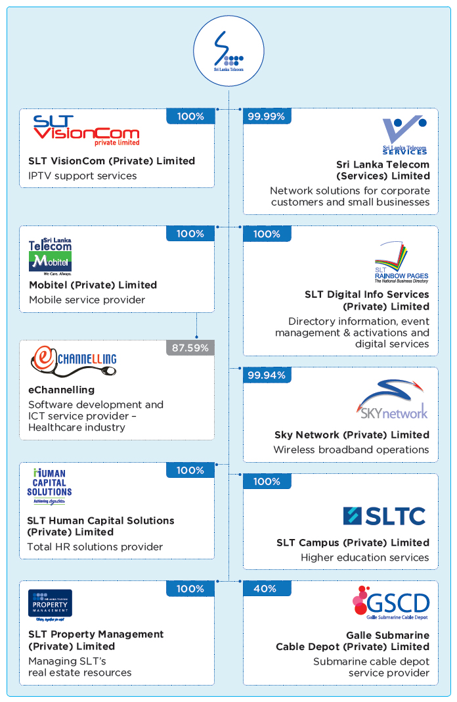
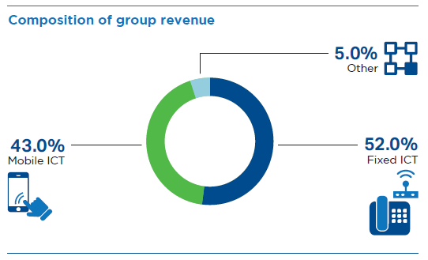
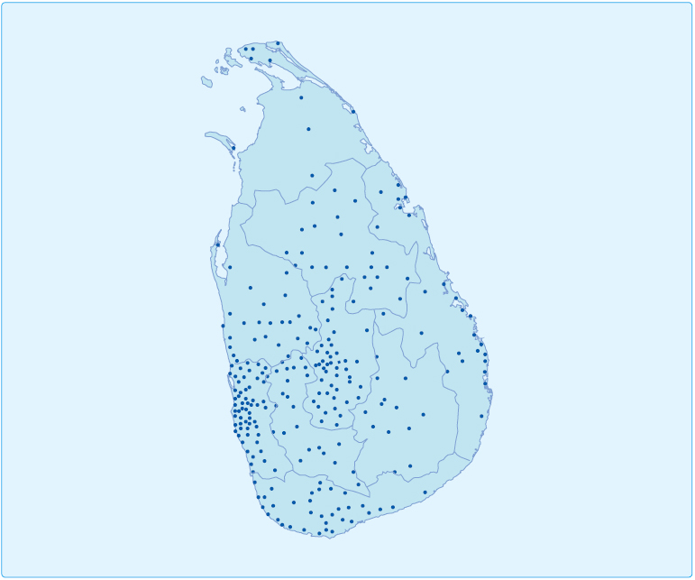
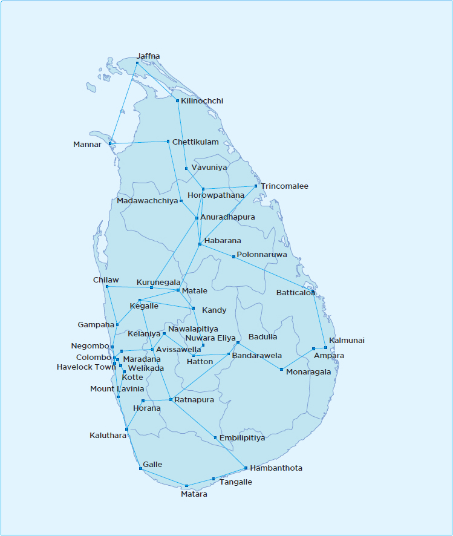
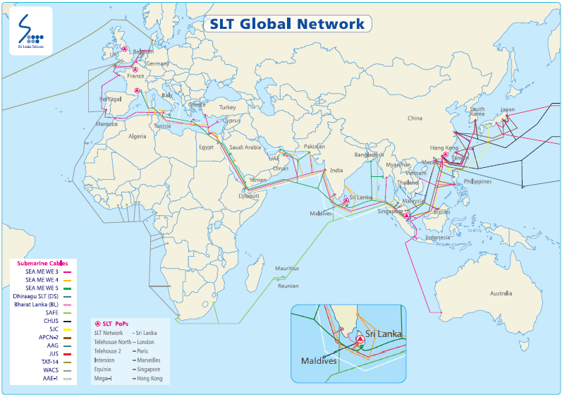
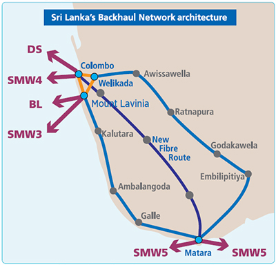

About SLT


Sri Lanka Telecom PLC (“SLT” or the “Company”) is the national Information and Communications Technology (ICT) solutions provider and the leading broadband and backbone infrastructure services provider in Sri Lanka. For over 160 years, SLT has been enabling opportunities and fulfilling the dreams and aspirations of all Sri Lankans – from delivering basic connectivity to an ever-evolving range of applications that distinguish the ICT industry today. Today, SLT is on a transformational journey to transition from a communications service provider into a digital service provider and become the nation’s preferred digital lifestyle provider.
Group structure

Principal lines of business
The Sri Lanka Telecom Group provides diversified services and an entire range of ICT solutions that cover fixed and mobile telephony, broadband, data services, Internet Protocol Television (IPTV), cloud computing, hosting services, and networking solutions to its varied customers via the latest technologies.
The SLT Group primarily focuses on three operating segments which are the Group’s strategic segments:
- Fixed ICT operations
- Mobile ICT operations
- Other segment operations
Fixed and mobile ICT operations constitute the SLT Group’s core business. In 2018, they collectively accounted for 95% of revenue, 98% of total assets, and nearly 100% of capital expenditure of the SLT Group.
Products and markets
Fixed ICT operations
The Group’s holding company, SLT, operates in the fixed ICT business. It provides telecom networks and ICT services to organisations of all sizes across all economic sectors, other telecommunications operators and Internet Service Providers (ISPs),
public sector institutions, and domestic customers.
ICT facilities and services provided include voice, data, broadband, wholesale, enterprise, cloud, international, and IPTV. One of the SLT Group’s key strategic objectives is to drive adoption of broadband-based consumer and enterprise services by expanding the broadband footprint through the Next Generation Network (NGN) and National Backbone Network (NBN). These efforts are supplemented by an array of technologies including optical fibre, ADSL2+, VDSL2, carrier-grade Wi-Fi, and both fixed and mobile 4G LTE technologies. The Company also uses its multiple international submarine cable networks to offer state-of-the-art global services, securing its position as a key global player in the telecom industry.
Mobile ICT operations
Sri Lanka Telecom Mobitel (Private) Limited (Mobitel), a fully-owned subsidiary of SLT, offers mobile ICT services including mobile telephony services, high-speed broadband, enterprise solutions, international services, and a range of value-added services. SLT Mobitel has been the pioneer in South Asia:
- To launch a Super 3.5G HSPA network
- To successfully demonstrate HSPA+ MIMO (Multiple Input Multiple Output) technology
- To successfully trial 4.5G LTE-Advanced Pro technology, and
- To launch the first commercial 4.5G/4G+ mobile network
With this introduction and being the only 4.5G/4G+ Mobile Network in Sri Lanka, SLT Mobitel possesses the fastest broadband speeds in the country. The award received from Ookla Speedtest for being the Fastest Mobile Network in Sri Lanka attests to SLT Mobitel’s unparalleled broadband network experience.
Further Mobitel was the first to deploy a Sub-1G Mobile Broadband Network by using 900MHz spectrum in Sri Lanka. In the year 2018 Mobitel commenced rolling out its largest ever 4G LTE Expansion Project with over 1,600 LTE sites across the nation together with VoLTE (Voice over LTE) service which enables the ability to make high quality voice calls over the LTE network for its customers.
Leading the way in 5G in Sri Lanka, Mobitel publicly demonstrated Sri Lanka’s first 5G Massive MIMO deployment over 3.5GHz spectrum.
Taking another innovative step towards the digital transformation, Mobitel provided a state-of-the-art LTE Critical Communications solution to a leading container terminal operator for the first time in Sri Lanka.
SLT Mobitel’s coverage extends nationwide and includes international roaming with the partnership of a global web of over 650 networks.
Towards 5G
Leading the way in 5G in Sri Lanka, Mobitel publicly demonstrated Sri Lanka’s first 5G deployment over 3.5GHz spectrum which is globally recognized as the primary frequency band for 5G. This 5G Massive MIMO (Multiple Input Multiple Output) technology demonstration utilized 64x64 MIMO configuration with commercially available user devices and commercially available network equipment. We look forward to commercially deploying a 5G Network to Sri Lankans in the near future.
Scale of operations
SLT group revenue in 2018
Total revenue of the SLT Group grew by 7.5% to LKR 81.4 Bn. during the year, driven by 6.4% revenue growth by SLT and a corresponding 6.5% growth at SLT Mobitel. In terms of business lines, the fastest growth rates with regards to revenue were accounted by broadband, enterprise solutions, TV, and for enterprises, households, and individuals of both fixed and mobile ICT segments.

Market capitalisation
SLT is one of Sri Lanka’s most valuable blue-chip companies with a float adjusted market capitalisation of LKR 2.33 Bn. as at 31 December 2018, ranking 16th among the listed companies on the Colombo Stock Exchange.
Our reach
The SLT Group covers the whole country and serves a customer base of over seven million accounts across fixed and mobile ICT services. Our customers include domestic users, small and medium enterprises (SMEs), retail customers, multinationals and enterprises, public sector institutions, as well as other operators and wholesale customers.
Our fibre optic network, with broadband speeds of up to 100 Mbps, extends nearly 45,000 kms across the island.
Network connectivity
We possess nearly 30,000 km of optical fibre dispersed throughout
the island, constituting 2.5 million loops. We equally possess over 300 nodes connected throughout the country which accumulates all traffic from various points in the island.
Thus, based on requirements we can route information to the required place in a few milliseconds. The core transmission network is equally built with an ultra high-speed capacity and cutting-edge routers.
Our mobile network connects over 7.6 million subscribers across Sri Lanka with voice and broadband wireless services. Mobile subscribers can connect using GSM/EDGE (2G/2.5G), UMTS/HSPA/HSPA+/DC-HSPA+ (3G/3.5G/3.75G), LTE/ LTE-Advanced (4G/4.5G) technologies via our mobile arm.
The National Broadband network
Our backbone network is built on 100G technology, 300 nodes, and 64 SLBN nodes. It is always available and functioning due to a comprehensive 1+2 redundancy system. Our network offers the fastest broadband speeds in Sri Lanka with the lowest latency and is a veritable asset in the development of the country. The NBN aims to cater to the future needs of all ICT operators in the country.
Multiple inter-connected data centres
SLT launched the “National Data Centre” in 2018, which joins SLT’s established data centres at SLT headquarters and Welikada to offer customers secure and reliable data hosting and cloud computing services. The data centres are interconnected via SLT’s fibre optic network. SLT’s data centres and Akaza cloud platform offers enterprises a scalable and cost-effective alternative to deploying their own dedicated computing resources in-house.
National Backbone Network
Our advanced fibre optic based nation-wide telecommunication main backbone network comprises 64 SLBN nodes which are functioning at all times due to availability of comprehensive Protection schemes such as Automatically Switched
Optical Network (ASON). Further our network is of high quality,
speed and capacity that comprises 8Tbps backed with a low latency;
and is a veritable asset in the
country’s development.
SLT’s IP Network provides intelligent IP transport services for all various platforms, which are related to delivering SLT’s retail products (Broadband, PEO TV, 4G and WiFi) and connecting government, enterprise and carrier business. It is also, connected to international carriers with multiple back-up paths to provide global connectivity for businesses. The network is comprised of an n*100 Gbps backbone, metro rings, and multiple access rings consisting of over 400 high-capacity nodes and over 3,000 service segregation nodes, making it the largest network in the Island.
IP network

SLBN network

Global connectivity
SLT connects Sri Lanka to the world through five international submarine cable systems: SEA-ME-WE 3, SEA-ME-WE 4, SEA-ME-WE 5, Bharat-Lanka, and the Dhiraagu-SLT system. SLT is a key member of the SEA-ME-WE 5 cable consortium with a full cable landing station at Matara with a capacity to connect to the East and West cable segments at 24 Tbps each. Our joint venture with Singapore-based Indian Ocean Cable Ship Private Limited, Galle Submarine Cable Depot Private Limited, handles submarine cable maintenance for the region, reducing service restoration times and rendering SLT a key global player in the telecom industry.

South asia’s first submarine cable depot in galle
Galle Submarine Cable Depot Private Limited is a joint venture formed with Indian Ocean Cableship Private Limited (IOCPL) and Sri Lanka Telecom (SLT) to operate the South Asia’s first Submarine Cable Depot in Galle dedicated for providing submarine cable spare storage facilities for the regional telecom operators under South East Asia Indian Ocean Cable Maintenance Agreement (SEAIOCMA) zone. The Submarine cable depot will be commercially operational from 1st of Jan 2019 onwards and the Depot will be ceremonially opened in March 2019.
